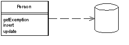

| Home | Articles | Talks | Links | Contact Me | ISA | ThoughtWorks |
An object that wraps a record data structure in an external resource, such as a row in a database table, and adds some domain logic to that object.

An object carries both data and behavior. Much of this data is persistent, and needs to be stored to a database. Active Record uses the most obvious approach: put data access logic into the domain object. This way all people know how to read and write their data from the database.
The essence of a Active Record is of a Domain Model where the classes in the Domain Model match very closely with the record structure of an underlying database. Each Active Record is responsible to saving and loading to the database, and also any domain logic that acts upon the data. This may be all the domain logic in the application, or you may find that some domain logic is held in Transaction Scripts with common and data-oriented code in the Active Record.
The data structure of the Active Record should exactly match that of the database: one field in the class for each column in the table. Type the fields the way the SQL interface gives you the data - don't do any conversion at this stage. You might consider Identity Field, but it may also be fine to leave the foreign keys as they are. You can use views or tables with Active Record, although obviously updates through views are usually limited. Views are particularly useful for reporting purposes.
The Active Recordclass typically has the following methods
The getting and setting methods can do some more intelligent things. They can convert from the SQL oriented types to better in memory types. Also if you ask for a related table, the getting method can return the appropriate Active Record, even if you aren't using Identity Field on the data structure (by doing a lookup).
In this pattern the tables are a convenience, but they don't hide the fact that a relational database is present. As a result you usually see less of the other object-relational mapping patterns present when you're using Active Record.
It's often difficult to tell the difference between Active Record and Row Data Gateway when you are using a Domain Model. You are using Active Record if your domain objects contain the SQL themselves to access the database, and you're using Row Data Gateway if a separate class does this. If you have some SQL in the domain objects and some in separate database objects then you have some form of hybrid.
Active Record is a good choice when your domain logic is not too complex, such as create, read, update and deletes.. Derivations and validations based on a single record work well in this structure.
In an initial design for a Domain Modelthe main choice is between Active Record and Data Mapper. Active Record has the primary advantage of simplicity. It's easy to build Active Records and they are easy to understand. The primary problem with them is they work well only if the Active Record objects correspond directly to the database tables: an isomorphic schema. If your business logic is complex then you'll soon want to use your object's mechanisms such as direct relationships, collections, and inheritance. These don't map easily onto Active Record. Adding them piecemeal soon gets very messy, so that's what will lead you to use Data Mapper instead.
Another argument against Active Record is the fact that it couples the object design to the database design. This makes it more difficult to refactor either design as the project goes forward.
Active Record is a good pattern to consider if you are using Transaction Script and you are beginning to feel some of the pain from code duplication, and difficulty in updating scripts and tables that Transaction Script often brings. In this case you can gradually start creating Active Records and then slowly refactor behavior into them. Often it helps to first wrap the tables as a Gateway, and then start moving behavior so they evolve to a Active Record.
This is a simple, even simplistic, example to show how the bones of Active Record works. We begin with a simple person class that has these fields
class Person... private String lastName; private String firstName; private int numberOfDependents;
There's also an ID field in the superclass.
The database is set up in the same structure
create table people (ID int primary key, lastname varchar, firstname varchar, number_of_dependents int)
To load an object the person class acts as the finder and also performs the load. It uses static methods on the person class.
class Person...
private final static String findStatementString =
"SELECT id, lastname, firstname, number_of_dependents" +
" FROM people" +
" WHERE id = ?";
public static Person find(Long id) {
Person result = (Person) Registry.getPerson(id);
if (result != null) return result;
PreparedStatement findStatement = null;
ResultSet rs = null;
try {
findStatement = DB.prepare(findStatementString);
findStatement.setLong(1, id.longValue());
rs = findStatement.executeQuery();
rs.next();
result = load(rs);
return result;
} catch (SQLException e) {
throw new ApplicationException(e);
} finally {
DB.cleanUp(findStatement, rs);
}
}
public static Person find(long id) {
return find(new Long(id));
}
public static Person load(ResultSet rs) throws SQLException {
Long id = new Long(rs.getLong(1));
Person result = (Person) Registry.getPerson(id);
if (result != null) return result;
String lastNameArg = rs.getString(2);
String firstNameArg = rs.getString(3);
int numDependentsArg = rs.getInt(4);
result = new Person(id, lastNameArg, firstNameArg, numDependentsArg);
Registry.addPerson(result);
return result;
}
Updating an object is a simple instance method
class Person...
private final static String updateStatementString =
"UPDATE people" +
" set lastname = ?, firstname = ?, number_of_dependents = ?" +
" where id = ?";
public void update() {
PreparedStatement updateStatement = null;
try {
updateStatement = DB.prepare(updateStatementString);
updateStatement.setString(1, lastName);
updateStatement.setString(2, firstName);
updateStatement.setInt(3, numberOfDependents);
updateStatement.setInt(4, getID().intValue());
updateStatement.execute();
} catch (Exception e) {
throw new ApplicationException(e);
} finally {
DB.cleanUp(updateStatement);
}
}
Insertions are also mostly pretty simple.
class Person...
private final static String insertStatementString =
"INSERT INTO people VALUES (?, ?, ?, ?)";
public Long insert() {
PreparedStatement insertStatement = null;
try {
insertStatement = DB.prepare(insertStatementString);
setID(findNextDatabaseId());
insertStatement.setInt(1, getID().intValue());
insertStatement.setString(2, lastName);
insertStatement.setString(3, firstName);
insertStatement.setInt(4, numberOfDependents);
insertStatement.execute();
Registry.addPerson(this);
return getID();
} catch (Exception e) {
throw new ApplicationException(e);
} finally {
DB.cleanUp(insertStatement);
}
}
Any business logic, such as calculating the exemption, then sits directly in the Person class
class Person...
public Money getExemption() {
Money baseExemption = Money.dollars(1500);
Money dependentExemption = Money.dollars(750);
return baseExemption.add(dependentExemption.multiply(this.getNumberOfDependents()));
}
 |  |